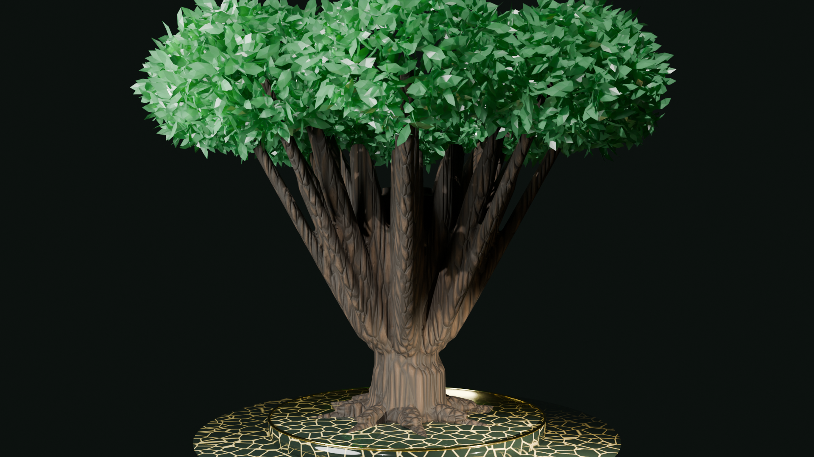
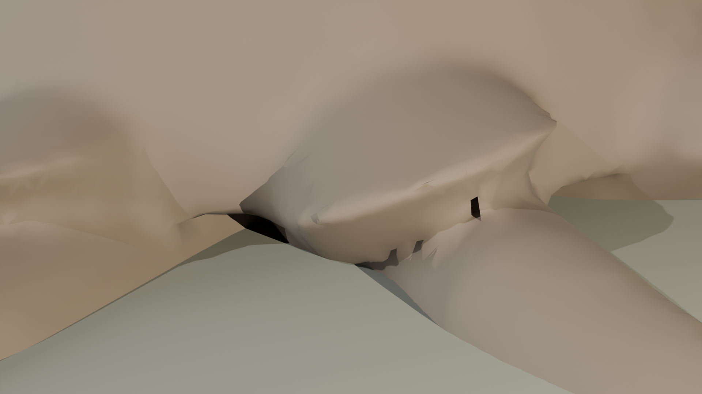
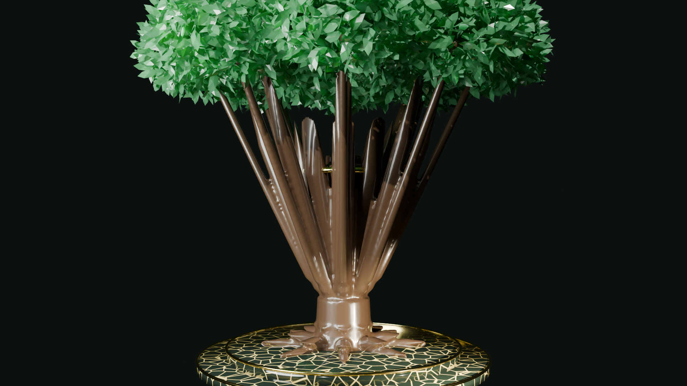

يجري الإعداد للقاء التأسيسي لجمع كلمة الأسرة، مناقشة اللائحة، وترتيب مواعيد اللقاء الشهري ولقاء العيد.
تاريخ افتراضي • مثال توضيحي
⌑
إطلاق شجرة النسب ثلاثية الأبعاد ببيانات تجريبية
تعرض الصفحة مجسم الشجرة والفروع الرمزية؛ وهذا لا يثبت صلات النسب أو اعتمادها.
ميزة جديدة • التوثيق الرقمي
متابعة محلية
طلباتي والمشاركات
ذاكرة وتاريخ الأسرة
معرض الأصالة ومجالس الأجداد
صور ومجسمات توضيحية لا تمثل أشخاصًا أو وقائع حقيقية

مجالس الألفة وصلة الرحم
اجتماع الأجيال في ديوانية العائلة وتوارث القيم الكريمة وحلقات الحديث بين الأجداد والأحفاد.

أرشيف توضيحي رمزي
حفظ وتوثيق شجرة عائلة الجذور الرمزية وسير الأجداد بأمانة ومسؤولية تاريخية للأجيال القادمة.

مجلس الأسرة والتخطيط المؤسسي
رؤية تجمع الحكمة والخبرة لخدمة أبناء وبنات الأسرة وتنظيم الصندوق والتكافل الاجتماعي.
صلة الرحم والتعارف
دليل أفراد العائلة
قائمة رمزية لشرح الواجهة فقط؛ لا تحتوي سجلًا عائليًا أو بيانات أفراد.
🔒
حماية البيانات الشخصية: جميع السجلات في هذا العرض مصطنعة بالكامل ومخصصة للتطوير المحلي. في النظام النهائي، تطبق إعدادات الخصوصية بدقة ولا تُنشر وسائل التواصل أو التواريخ الدقيقة للعامة.
🔍
جارٍ التحميل...
أصولنا المباركة وامتدادنا
شجرة النسب ثلاثية الأبعاد
معاينة تفاعلية للمجسم وتوزيع رمزي للفروع؛ لا تمثل نقاطها سجل نسب موثقًا.
جدول أعمال اللقاء التأسيسي الأول (مسودة ٩٠–١٢٠ دقيقة)
مسودة تنظيمية مطروحة لمراجعة العائلة
الفقرة والهدف
الزمن المقدر
المسؤول / المتحدث
المخرج المتوقع
الافتتاح والترحيب: تلاوة وتذكير بفضل صلة الرحم
١٠ دقائق
الميسر
افتتاح اللقاء وضبط الوقت
كلمة منسق المبادرة: عرض غرض البوابة الرقمية وحدودها
٥ دقائق
منسق المبادرة التقنية
إيضاح خصوصية المنصة وعدم جمع أموال
كلمات ممثلي الفروع الثمانية: رؤى واقتراحات الفروع
٣٠ دقيقة
ممثلو الفروع (٣-٤ د لكل فرع)
مشاركة الجميع وصياغة التطلعات
مناقشة أهداف اللقاءات الدورية: تحديد أولويات السنة الأولى
١٥ دقيقة
حوار مفتوح
٣-٥ أهداف ملموسة
مقترح مجلس العائلة الافتراضية: بحث الرئاسة والتمثيل والمدة
٢٠ دقيقة
كبار الأسرة والحضور
مسودة تشكيل للمصادقة العائلية
صندوق العائلة: توضيح الاشتراطات النظامية والترخيص
١٥ دقيقة
مستشار / منسق تنظيمي
تأكيد عدم التحصيل قبل الترخيص الرسمي
تدوين القرارات والمحضر: تكليف المسؤولين وموعد اللقاء التالي
١٠ دقائق
كاتب المحضر والمجلس
محضر رسمي موقع وموجز معتمد
مشاركة الفروع الثمانية
مسودات كلمات ممثلي الفروع (نصوص تفاعلية قابلة للتعديل محليًا)
الأسماء والصفات هنا مسودات استرشادية، وتحدد العائلة من يمثل كل فرع ومن يتحدث وترتيب الكلمات. يمكنك تعديل النصوص وحفظها محليًا لتجهيز محضر اللقاء.
كلمة الفرع 1ممثل الفرع (محدد عائليًا)
كلمة الفرع 2ممثل الفرع (محدد عائليًا)
كلمة الفرع 3ممثل الفرع (محدد عائليًا)
كلمة الفرع 4ممثل الفرع (محدد عائليًا)
كلمة الفرع 5ممثل الفرع (محدد عائليًا)
كلمة الفرع 6ممثلة الفرع (محددة عائليًا)
كلمة الفرع 7ممثلة الفرع (محددة عائليًا)
كلمة الفرع 8ممثلة الفرع (محددة عائليًا)
حوكمة وتنظيم العمل الأسري
مجلس العائلة الافتراضية بالمملكة العربية السعودية (مقترح)
هيكل تنظيمي مقترح لقيادة وتنسيق المبادرات الأسرية وتمثيل الفروع الثمانية.
⚖
إيضاح نظامي وتنظيمي حاسم
جميع المناصب والتشكيلات الواردة في هذه الصفحة هي مقترحات أولية مطروحة للنقاش في اللقاء التأسيسي الأول. لا يكتسب أي منصب صفة رسمية أو ملزمة إلا بعد اتفاق صريح من عموم العائلة وصدور محضر معتمد وموقع حسب الأصول.
رؤية المجلس المقترح
مجلس جامع يُعلي الشفافية ويخدم أجيال الأسرة
يهدف المجلس المقترح إلى رعاية مصالح الأسرة، تيسير التواصل وصلة الرحم، الإشراف على اللقاءات الدورية، وتأسيس صندوق العائلة ومتابعة ترخيصه الرسمي لدى الجهات المختصة في المملكة.
التشكيل المقترح
هيكل مجلس العائلة المقترح
رئاسة المجلس (مقترح)
العم 5 افتراضي
مرشح لرئاسة المجلس بالتوافق العائلي
قيادة المجلس وتوجيه أعماله، تمثيل الأسرة في المبادرات العامة، ورعاية التوافق بين كافة الفروع.
نائب الرئيس (مقترح)
يُحدد بالتشاور والتوافق
يُنتخب أو يُسمى بمحضر الاجتماع التأسيسي
معاونة رئيس المجلس، تولي المهام التنفيذية، وإدارة اجتماعات اللجان وفرق العمل الأسرية.
أمانة المجلس
أمين عام المجلس ومسؤول الاتصال
تكليف إداري محدد بمدة
توثيق المحاضر، متابعة تنفيذ القرارات، والتنسيق الدوري مع ممثلي الفروع الثمانية.
تمثيل الفروع
ممثلو الفروع الثمانية (1، 2، 3، 4)
يختار كل فرع ممثله بتوافق داخلي
نقل تطلعات واقتراحات أفراد الفرع، ومتابعة مشاركتهم في اللقاءات والمبادرات.
تمثيل الفروع
ممثلو الفروع الثمانية (5، 6، 7، 8)
يختار كل فرع ممثله بتوافق داخلي
ضمان شمولية التمثيل والمشاركة الفاعلة لكافة أبناء وبنات الأسرة في اتخاذ القرار.
المسؤولية النظامية
دور الخصوصية المقترح
دور رقابي وتطوعي متخصص
متابعة متطلبات الخصوصية مع مختص؛ لا تمثل هذه المعاينة تقييمًا أو اعتمادًا للامتثال.
📰 أخبار الأسرة • مقولات • صور وفيديو
منبر أخبار العائلة، المقولات، والوسائط المرئية
معاينة محلية للمنبر فقط؛ النشر ورفع الوسائط والمزامنة غير مفعّلة.
ℹ️
النشر غير متاح في نسخة المعاينة. لا تُدخل أخبارًا أو أسماء أو مرفقات؛ لا توجد مصادقة أو مزامنة أو رفع ملفات.
مشهد توضيحي رمزي. التخصيص والحفظ غير متاحين في المعاينة.
التكافل والمساندة الأخوية
صندوق عائلة افتراضي
تعريف أولي بالأهداف المقترحة؛ لا يعرض لوائح معتمدة ولا يجمع أموالًا أو تبرعات.
🚫
تنبيه نظامي قطعي: لا يوجد تحصيل مالي أو دفع إلكتروني
لا تجمع هذه البوابة أي أموال أو تبرعات أو اشتراكات مالية إطلاقًا.
صندوق العائلة مسار نظامي مستقل يخضع للأنظمة السارية في المملكة العربية السعودية والمركز الوطني لتنمية القطاع غير الربحي (NCNP). لا يجوز فتح حسابات أو تحصيل أموال إلا بعد استكمال المتطلبات النظامية وتحديد الكيان المرخص والحسابات البنكية المعتمدة رسميًا.
♡المسار الأول
التكافل والدعم الاجتماعي
مساندة الأسر المتعففة والحالات الطارئة بسرية تامة ومراجعة إنسانية مباشرة من لجنة مخصصة مكلفة من المجلس دون معالجة آلية.
✧المسار الثاني
المنح وتشجيع التعليم
دعم أبناء وبنات العائلة المتميزين في دراستهم الجامعية، ورعاية المبتكرين وأصحاب الإنجازات الأكاديمية والمهنية.
⚖الاشتراكات المالية
حالة التحصيل المالي
معطل بالكامل في هذه البوابة. ستُنشر القنوات البنكية واللوائح فقط بعد صدور الترخيص الرسمي والاعتماد القانوني للمؤسسة الأهلية.
المرجع النظامي السعودي
لوائح المركز الوطني لتنمية القطاع غير الربحي (NCNP)
يستند مقترح الصندوق الاسترشادي إلى الدليل الصادر عن المركز الوطني لتنمية القطاع غير الربحي لتأسيس الصناديق العائلية كمؤسسات أهلية، بما يشمل:
إعداد اللائحة الأساسية الاسترشادية واعتمادها من المؤسسين.
فصل الحساب البنكي للصندوق عن الحسابات الشخصية للأفراد.
الشفافية في التقارير المحاسبية السنوية ومراجعتها من محاسب قانوني معتمد.
حصر الاستفادة في الأغراض التكافلية والتعليمية المعتمدة في اللائحة.
الحسابات والأدوار
نسخة عرض توضيحية: لا يتاح التسجيل أو تعيين الأدوار أو حفظ التغييرات ومزامنتها.
ما الذي يتيحه كل دور؟
التسجيل والصلاحيات غير مفعّلين. مستوى الجيل يحدد سقف الصلاحيات، والتكليف يحدد المهمة الفعلية.
المستوى
من يشمله وما الذي يحدده
المؤسس
صلاحية إدارة النظام والحسابات وتسمية الأعمام المخولين ومراجعة التفويضات؛ يثبت الحساب عند الإعداد ولا يُستنتج من الاسم أو الجيل.
الأعمام المخولون
صلاحيات عائلية ضمن تكليفهم، مع تفويض مهام محددة لا تتجاوز صلاحياتهم.
أبناء الفرعين 1 و2
سقف الصلاحيات الأعلى بين أفراد الفروع؛ لا تُمنح مهمة إدارية إلا بتكليف ونطاق واضحين.
أبناء أبناء 1 و2
سقف أقل من آبائهم؛ لا تُمنح إدارة الحسابات أو اعتماد النسب لمجرد الجيل.
أبناء أبنائهم
صلاحيات العضو الأساسية، ويمكن تكليفهم بمهمة محددة.
يُحدد مستوى العضو بعد ربط حسابه بسجل موثّق ومراجعة صلة النسب. تطابق الاسم يقترح سجلًا للمراجعة فقط، ولا يمنح صلاحية وحده. بقية الفروع لا تحصل تلقائيًا على مستوى أبناء 1 و2.
الأدوار الوظيفية أدناه مقترحة وغير مفعّلة؛ كل دور يقتصر على مهمته والفرع أو السجل المصرّح به.
الفئة أو الدور
الصلاحية وحدودها
زائر
يشاهد معلومات التعريف وأسماء الفروع الرئيسية فقط؛ لا يرى دليل الأعضاء أو أسماء الأفراد.
طلب عضوية قيد المراجعة
يتابع طلبه ويصحح بياناته؛ لا يظهر اسمه في الشجرة حتى تُراجع العضوية وصلة النسب ويوافق على عرض اسمه.
عضو موثّق
يدير بياناته وتفضيلات ظهورها، ويشاهد ما أذن أصحابه بعرضه، ويرسل طلب تصحيح للنسب؛ لا يعدّل سجلات الآخرين.
مراجع عضوية الفرع
يراجع طلبات الانتساب إلى فرعه ضمن تكليفه؛ لا يعتمد صلة النسب النهائية ولا يدير أدوار بقية الفروع.
مراجع النسب
يراجع طلبات الروابط ومصادرها ويسجل قرار المراجعة؛ لا يرى بيانات الاتصال إلا عند حاجة مصرح بها.
مشرف المحتوى
يراجع المشاركات والوسائط والبلاغات؛ لا يدير الحسابات أو بيانات النسب.
مدير حسابات العائلة
يدير الدعوات والحسابات وتعيين الأدوار بتكليف عائلي؛ لا يعتمد النسب منفردًا ولا يرى البيانات الخاصة افتراضيًا.
مسؤول تشغيل الموقع
يتابع الاستضافة والتحديثات التقنية؛ لا يملك صفة إدارية عائلية أو وصولًا اعتياديًا لملفات الأعضاء.
المبرمج ليس مشرف العائلة تلقائيًا. للمؤسس صلاحية الإدارة العليا؛ والأعمام المخولون ومن يفوضونهم يعملون ضمن الصلاحيات والنطاق المعتمد. إدارة الموقع التقنية دور منفصل ومحدود.
حسابات الأعضاء الموثّقة
طلبات برامج الصندوق والمنح
طلبات الدعم والمنح المسجلة
📋لا توجد طلبات مسجلة حتى الآن
عند إنشاء طلب دعم أو منحة، سيظهر هنا مع حالته.
مؤشرات توضيحية مجمعة
التقارير والمؤشرات العامة
بيانات إحصائية عامة لا تكشف هويات أو بيانات شخصية خاصة.
إحصاءات توضيحية
الفروع الظاهرة في نموذج المعاينة
٨ فروع
1، 2، 3، 4، 5، 6، 7، 8
الطلبات المسجلة محليًا
٠
محفوظة في التخزين المحلي فقط
حالة الاعتماد والامتثال
غير مُقيّمة
هذه المعاينة لا تثبت اعتماد النسب أو الامتثال النظامي.
المجالات التكافلية المستهدفة مستقبلاً (نسب تقديرية)